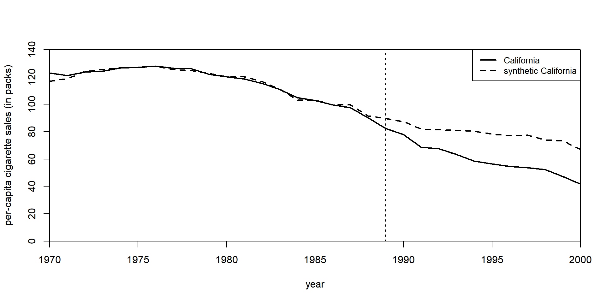
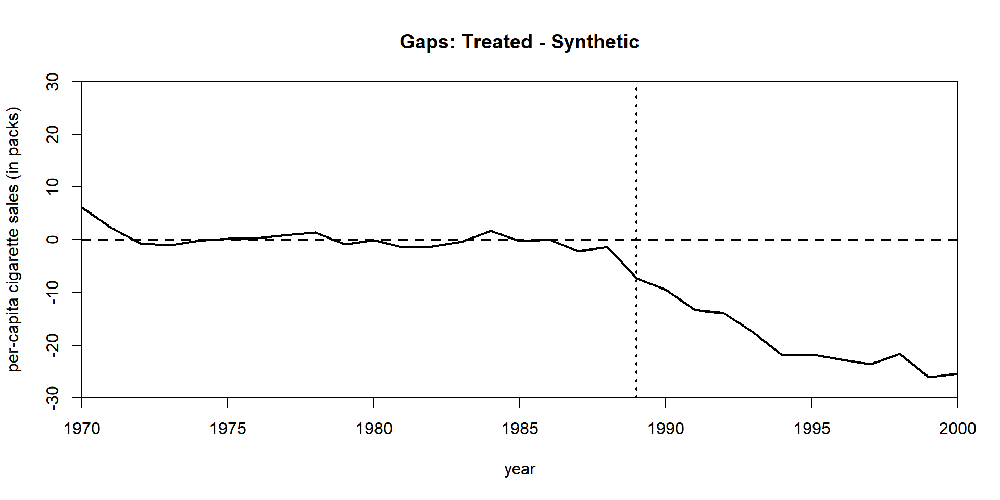
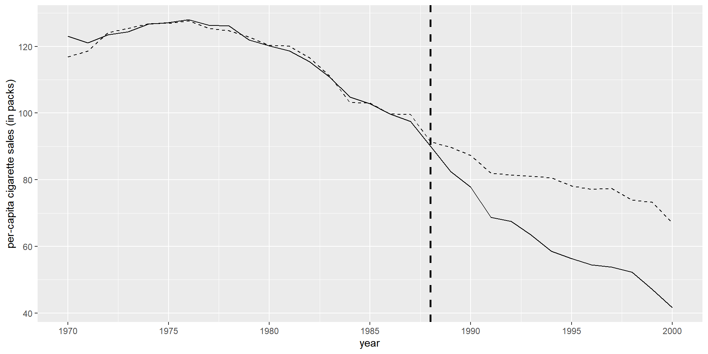
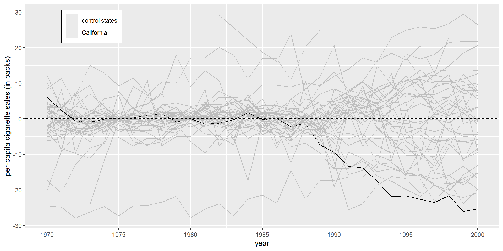

Clase 26. Control sintético en R
Inferencia Causal
Irvin Rojas
rojasirvin.com
Centro de Investigación y Docencia Económicas División de Economía
Proposición 99
Usamos los datos del estudio sobre la proposición 99 Abadie, Diamond y Hainmueller (2010)
Tenemos un panel de estados de 1970 a 2000
La intervención ocurrió en California (el estado 3) en 1989
Noten que tenemos NA para varios periodos en las variables que usamos para hacer el ajuste del CS, lo cual no será un problema
state_id state year cigsale lnincome beer age15to24 retprice
1 1 Alabama 1970 89.8 NA NA 0.1788618 39.6
2 1 Alabama 1971 95.4 NA NA 0.1799278 42.7
3 1 Alabama 1972 101.1 9.498476 NA 0.1809939 42.3
4 1 Alabama 1973 102.9 9.550107 NA 0.1820599 42.1
5 1 Alabama 1974 108.2 9.537163 NA 0.1831260 43.1
6 1 Alabama 1975 111.7 9.540031 NA 0.1841921 46.6Formato de datos
Usaremos varias funciones incluidas en el paquete Synth, desarrollado por Hainmueller & Diamond
Asegúrense de tener también la librería reshape2, que usaremos para manipular los datos en panel
Para ejecutar el proceso de optimización, debemos de poner los datos en el formato apropiado, partiendo del panel long
La mayoría de los insumos necesarios tienen nombres autoexplicados
Especificamos las variables del panel que identifican a los estados (state_id) y al tiempo (year)
dataprep.out <-
dataprep(panel.ca,
predictors= c("lnincome", "beer", "age15to24","retprice"),
predictors.op = c("mean"),
dependent = c("cigsale"),
unit.variable = c("state_id"),
time.variable = c("year"),
special.predictors = list(
list("cigsale",1975,c("mean")),
list("cigsale",1980,c("mean")),
list("cigsale",1988,c("mean"))),
treatment.identifier = 3,
controls.identifier = c(1:2,4:39),
time.predictors.prior = c(1980:1988),
time.optimize.ssr = c(1970:1988),
unit.names.variable = c("state"),
time.plot = c(1970:2000))Formato de datos
Los predictores entrarán como un promedio de los valores para cada unidad de 1980 a 1988
Los predictores especiales en este caso son tres puntos pre intervención de la variable de resultados (1975, 1980 y 1988)
Especificamos quién es la unidad tratada (3) y quiénes los donantes (del 1 al 2 y del 4 al 39)
El proceso de optimización para obtener \(V\) minimizará los errores cuadráticos de la variable de resultados y su contraparte ajustada de 1970 a 1988
dataprep.out <-
dataprep(panel.ca,
predictors= c("lnincome", "beer", "age15to24","retprice"),
predictors.op = c("mean"),
dependent = c("cigsale"),
unit.variable = c("state_id"),
time.variable = c("year"),
special.predictors = list(
list("cigsale",1975,c("mean")),
list("cigsale",1980,c("mean")),
list("cigsale",1988,c("mean"))),
treatment.identifier = 3,
controls.identifier = c(1:2,4:39),
time.predictors.prior = c(1980:1988),
time.optimize.ssr = c(1970:1988),
unit.names.variable = c("state"),
time.plot = c(1970:2000))Estimación
El procedimiento anterior genera una lista (dataprep.out) con los ingredientes necesarios para estimar el control sintético usando la función synth
Ponemos los resultados en tabla usando synth.tab
Estimación
- La matriz \(W\) nos indica el peso que tiene cada una de las unidades del grupo donador para construir el CS
Estimación
- Podemos ver cómo se compara la unidad tratada con su contraparte sintética y con el promedio de unidades del grupo donador
Treated Synthetic Sample Mean
lnincome 10.077 9.859 9.829
beer 24.280 24.095 23.655
age15to24 0.174 0.174 0.173
retprice 89.422 89.318 87.266
special.cigsale.1975 127.100 126.897 136.932
special.cigsale.1980 120.200 120.248 138.089
special.cigsale.1988 90.100 91.432 113.824Gráfica de series de tiempo
- Una de las formas más claras de presentar los resultados es mostrando las trayectorias realizada y sintética de la unidad tratada

Brechas
El gráfico de las brechas nos permite visualizar más fácilmente el efecto del tratamiento
La brecha es simplemente la distancia entre la trayectoria realizada y el control sintético

Gráficas a mano
Podemos recuperar los productos de las estimaciones y realizar las mismas gráficas a mano
Esto nos será útil no solo para saber exactamente qué estamos graficando, sino para hacer el estudio placebo
Gráficas a mano
#Gráfico de series
data.plot %>%
ggplot()+
geom_line(aes(y=Y1,x=year)) +
geom_line(aes(y=Ys,x=year), linetype = "dashed")+
ylab("per-capita cigarette sales (in packs)")+
xlab("year")+
geom_vline(xintercept=1988, color = "black", size=1, linetype="dashed")+
scale_y_continuous(breaks = seq(0,140,20))+
scale_x_continuous(breaks=seq(1970, 2000, 5))
Gráficas a mano
- Para la gráfica de la brecha simplemente calculamos primero dicha brecha
- Y construimos la gráfica
data.plot %>%
ggplot()+
geom_line(aes(y=gap,x=year)) +
ylab("per-capita cigarette sales (in packs)")+
xlab("year")+
geom_vline(xintercept=1988, color = "black", size=1, linetype="dashed")+
geom_hline(yintercept=0, color = "black", size=1, linetype="dashed")+
scale_y_continuous(breaks = seq(-30,30,10))+
scale_x_continuous(breaks=seq(1970, 2000, 5))
Inferencia usando placebos
El estudio placebo consiste en estimar un control sintético para cada una de las unidades del grupo donador
Asumimos que en dichas unidades no hubo una ley contra el tabaco, por lo que esperamos no ver efectos en el consumo de cigarros
Queremos ver qué tan común sería ver el efecto estimado para California con nuestra estrategia empírica
Inicio creando un data frame para guardar los 39 placebos (39 series de 31 años)
Después realizamos exactamente la misma tarea para cada uno de los estados no tratados (y para California, para facilitar el manejo de los resultados)
Aquí veamos el script del laboratorio
Inferencia usando placebos
El resultado es un panel long de unidades placebo
Replicamos la Figura 4
placebos %>%
filter(cons_synth>-30 & cons_synth<30) %>%
ggplot(aes(x=year, y=cons_synth, group=state, linetype=treated, color=treated))+
geom_line()+
scale_linetype_manual(values=c("solid", "solid"))+
scale_color_manual(values=c("grey","black")) +
ylab("per-capita cigarette sales (in packs)")+
xlab("year")+
geom_vline(xintercept=1988, color = "black", size=.5, linetype="dashed")+
geom_hline(yintercept=0, color = "black", size=.5, linetype="dashed")+
scale_y_continuous(breaks = seq(-30,30,10))+
scale_x_continuous(breaks=seq(1970, 2000, 5))+
theme(legend.title = element_blank(),
legend.position = c(.14, .90),
legend.box.background = element_rect(color="black", size=.3),
legend.box.margin = margin(1, 1, 1, 1))
Recomendación
- Vale la pena este tutorial directamente del padre del control sintético
Próxima sesión
La siguiente semana hablaremos sobre modelos econométricos estructurales aplicados a evaluación
- Low, H., & Meghir, C. (2017). The use of structural models in econometrics. Journal of Economic Perspectives, 31(2), 33-58.
El jueves tendremos una presentación basada en
- Attanasio, O. P., Meghir, C., & Santiago, A. (2011). Education choices in Mexico: using a structural model and a randomized experiment to evaluate Progresa. The Review of Economic Studies, 79(1), 37-66.
Presentación creada usando el paquete xaringan en R.
El chakra viene de remark.js, knitr, y R Markdown.
Material de clase en versión preliminar.
No reproducir, no distribuir, no citar.